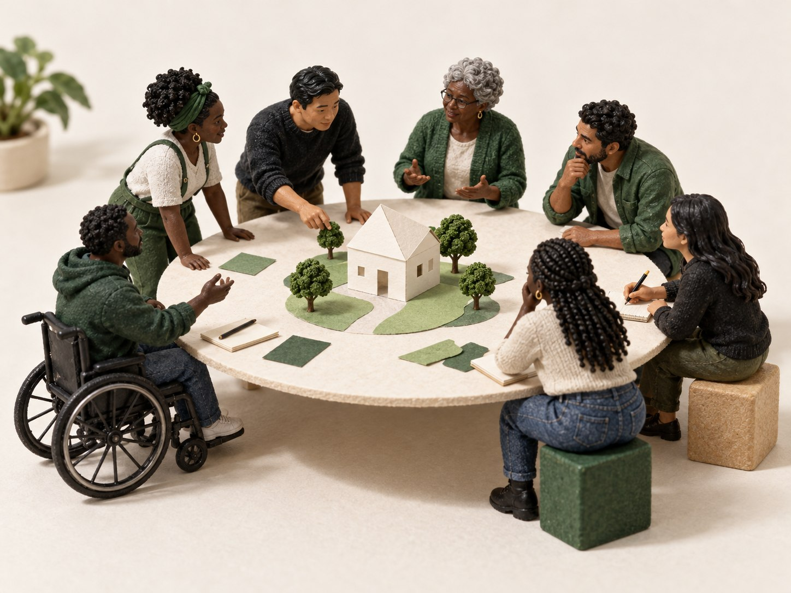
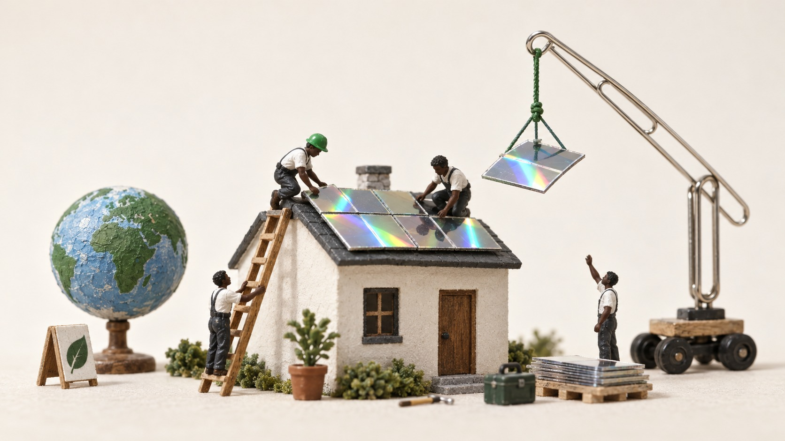
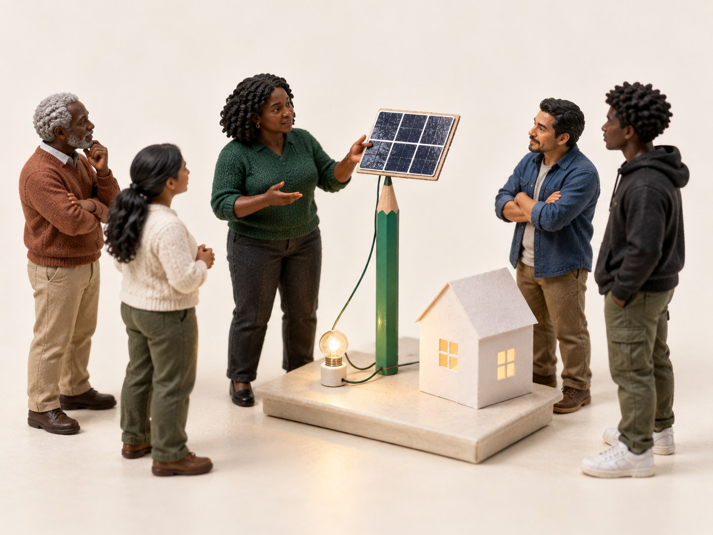
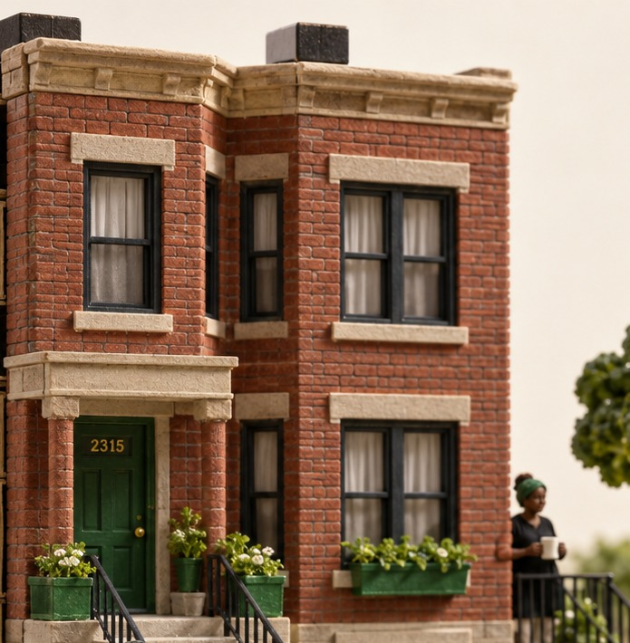
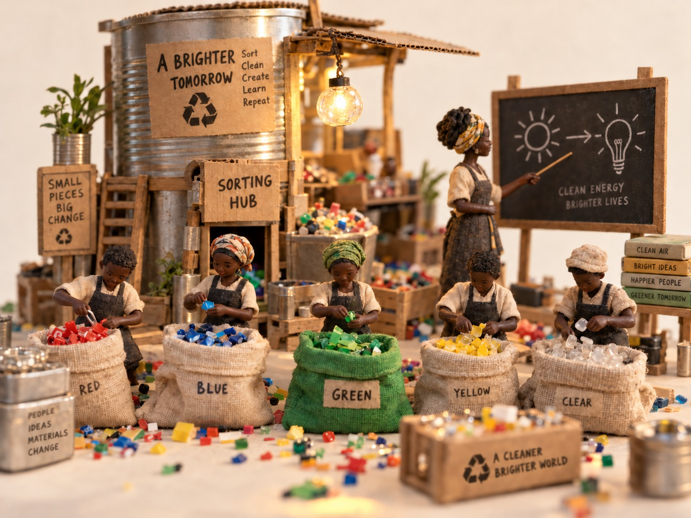

People
A safety-first culture where communities have a say in the technology that shapes their lives.
Energy · Security · Workforce
Technology should help communities thrive. We connect energy, security and learning to build a safer, more informed future.

Our focus

A safety-first culture where communities have a say in the technology that shapes their lives.

Energy knowledge and resilient systems that support everyday life and future opportunity.

Trustworthy information and responsible technology as AI and connected systems evolve.
Rooted in Chicago
Green Rangers connects energy, security and learning with a global outlook: helping people understand the systems that shape their lives and protect what matters.
What guides us →

Global Rangers
In developmentA recycling and energy-literacy project taking shape in Paynesville with Kenson Janitorial Services.
See the project →